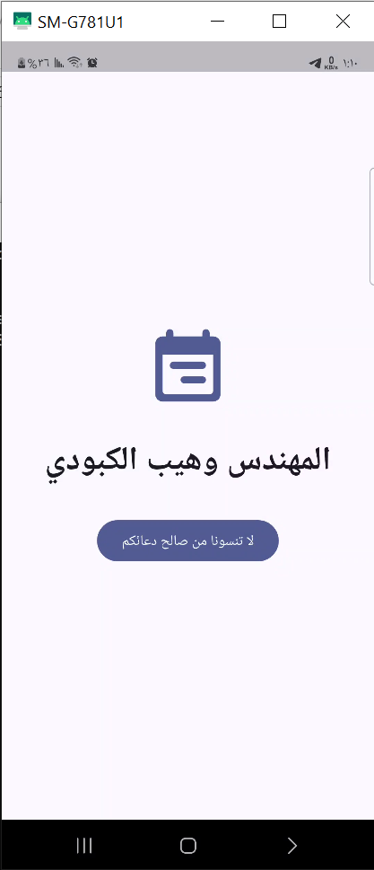
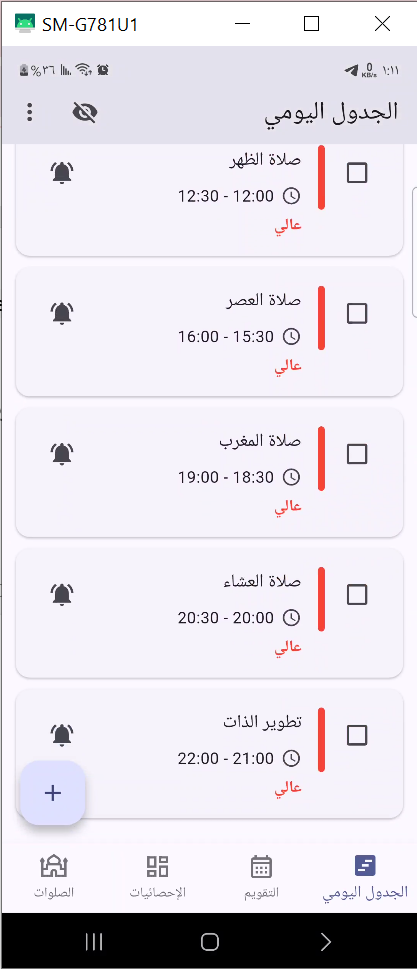
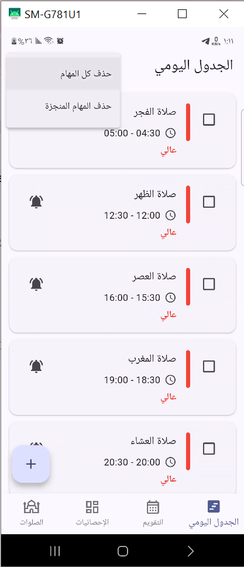
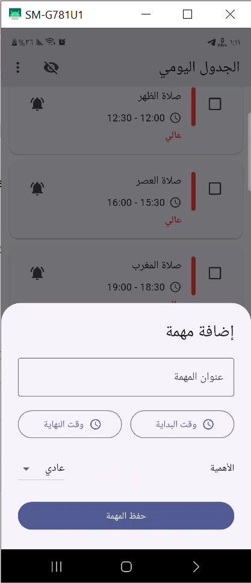
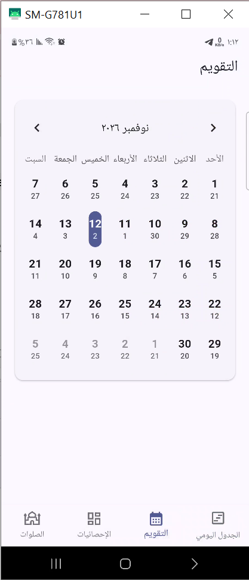
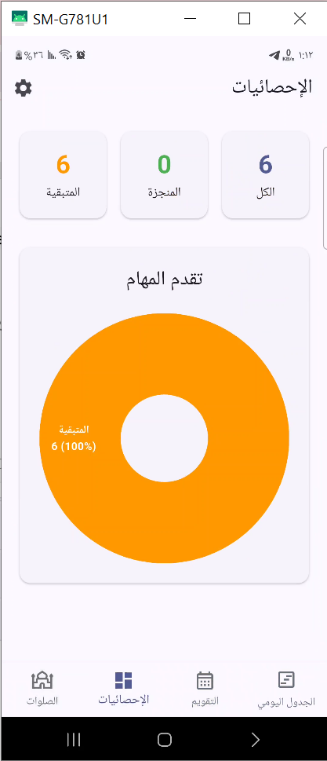
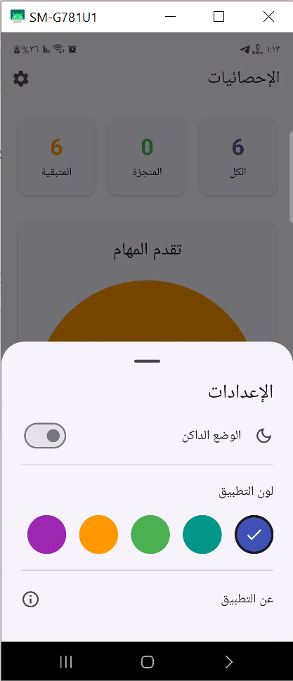
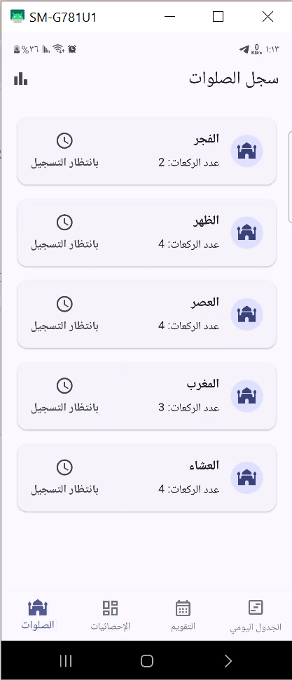
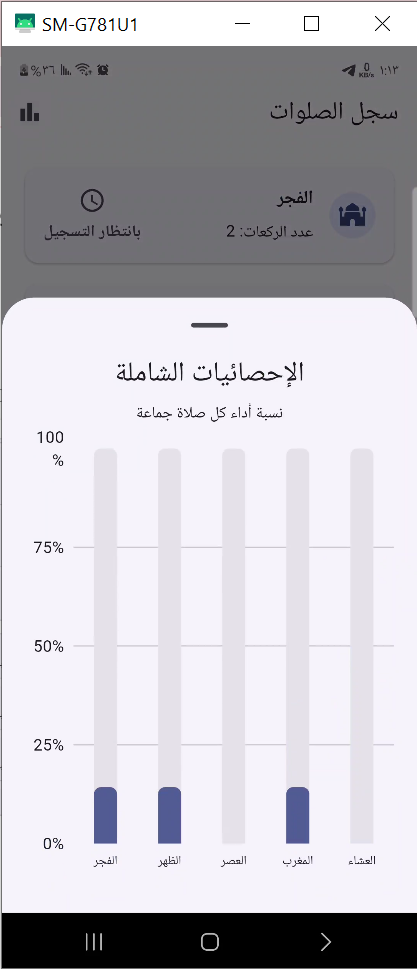

شاشة البداية
هوية التطبيق العربية وافتتاحية التجربة
تطوير: وهيب الكبودي | Wahib Al-Kaboudi
خطّط ليومك، رتب أولوياتك، وتابع إنجازاتك. معرض لقطات حقيقية من تطبيق عربي لإدارة المهام اليومية ومتابعة الصلوات.
Flutter + DartSQLiteRTLOffline-firstصور من تشغيل التطبيق على Android، مصحوبة بوصف مختصر لكل شاشة. هذا الملف يعمل محليًا دون اتصال بالإنترنت.

هوية التطبيق العربية وافتتاحية التجربة

بطاقات المهام والأوقات والأولويات

خيارات حذف جميع المهام أو المهام المنجزة

عنوان المهمة ووقت البداية والنهاية والأولوية

الانتقال بين الأيام مع عرض اليوم الهجري والميلادي

ملخص المنجز والمتبقي مع رسم بياني

الوضع الداكن والألوان ومعلومات التطبيق

متابعة الصلوات الخمس وتسجيل أدائها

تصور بياني لنِسَب أداء الصلوات جماعة